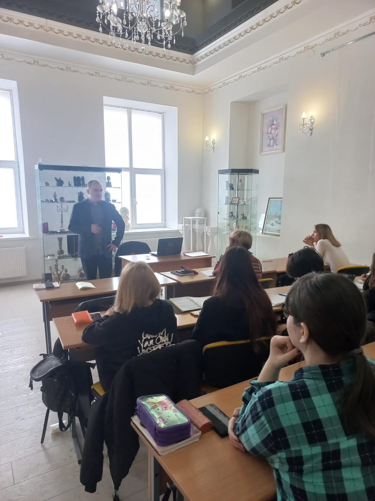
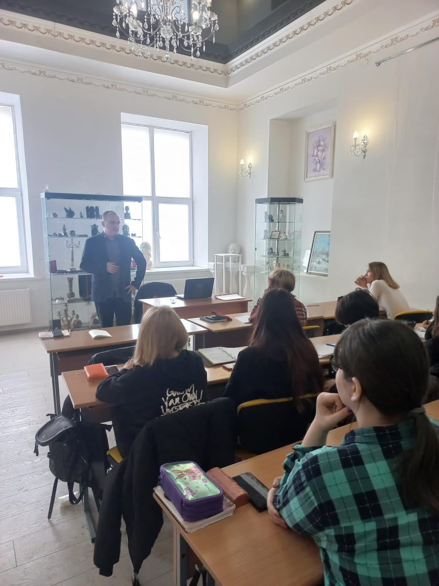

25 января 2022 года
Институт Дружбы народов Кавказа при поддержке Евразийского клуба ученых, Международной педагогической академии, Конгресса деловых кругов Ставропольского края, Торгово-промышленной палаты Ставропольского края проводит XVI Международную научно-практическую конференцию «Перезагрузка общецивилизационных ценностей – ответ на вызовы пандемии».
Конференция проводится в целях решения поставленных Президентом Российской Федерации В.В. Путиным задач «укрепления российской идентичности – общенационального единения народа в эпоху политических и экономических потрясений», а также «повышения роли теологии как воспитательного ресурса в сфере гуманитарного знания, в сбережении духовно-нравственных ценностей и культурного наследия народов России, в воспитании подрастающего поколения» в период глобальной пандемии.
В рамках конференции состоится всестороннее обсуждение вопросов, связанных с перезагрузкой общецивилизационных ценностей в условиях глобальной пандемии.
К участию в конференции приглашаются ученые, научные работники, представители научных и образовательных организаций, религиозные и общественные деятели, преподаватели, аспиранты, магистранты.
- пленарное заседание: 25января 10.00-12.00 (московское время);
- работа секций: 25 января 12.30-16.00 (московское время).
Сопредседатели Программного комитета конференции:
Основные направления работы конференции:
По итогам проведения конференции будет издан электронный сборник с опубликованными материалами конференции и размещен в системе Российского индекса научного цитирования Научной электронной библиотеки (РИНЦ).
Для участия в работе конференции следует прислать на электронную почту Адрес электронной почты защищен от спам-ботов. Для просмотра адреса в вашем браузере должен быть включен Javascript. в Оргкомитет конференции регистрационную карту участника (Приложение 1), включающую в себя данные об авторах и тему доклада, а также полнотекстовый доклад не позднее 17 января 2022 года.
Сканированная копия сборника докладов в формате PDF будет размещена на сайте http://idnk.ru/innovatsii-i-vuzovskaya-nauka/publikatsii.html.
Просим соблюдать требования к оформлению материалов (Приложение 2).
Проведение конференции планируется в смешанном формате (очная форма и On-Line формат).
Институт Дружбы народов Кавказа организационно и технически обеспечивает проведение пленарной и секционных сессий в удаленном режиме, с подключением почетных гостей, докладчиков и зарегистрированных участников по видеоконференцсвязи.
Ссылки для подключения, идентификаторы и коды доступа будут направлены адресатам по электронной почте.
Видеотрансляция конференции, а также информация и ссылки на трансляцию будут размещены на сайте Института: www.idnk.ru
Отдельные выступления и/или доклады, отобранные организационным комитетом, будут изданы в виде статей в научно-практическом журнале «Вестник ИНСТИТУТА ДРУЖБЫ НАРОДОВ КАВКАЗА. Теория экономики и управления народным хозяйством» (импакт-фактор - 0,572), входящем в Перечень изданий, рекомендованных ВАК для защиты кандидатских и докторских диссертаций.
С условиями оформления публикаций и архивом номеров можно ознакомиться на сайте журнала: http://www.idnk.ru/innovatsii-i-vuzovskaya-nauka/zhurnal-vestnik-idnk.html
Контакты
E-mail: Адрес электронной почты защищен от спам-ботов. Для просмотра адреса в вашем браузере должен быть включен Javascript.
Тел. 8(8652)28-25-00 – приемная ректора ЧОУ ВО «ИНСТИТУТ ДРУЖБЫ НАРОДОВ КАВКАЗА».
E-mail: Адрес электронной почты защищен от спам-ботов. Для просмотра адреса в вашем браузере должен быть включен Javascript.
Тел. 8988-754-1757 – Черникова Валентина Евгеньевна, зав. отделом науки и аспирантуры ЧОУ ВО «ИНСТИТУТ ДРУЖБЫ НАРОДОВ КАВКАЗА».